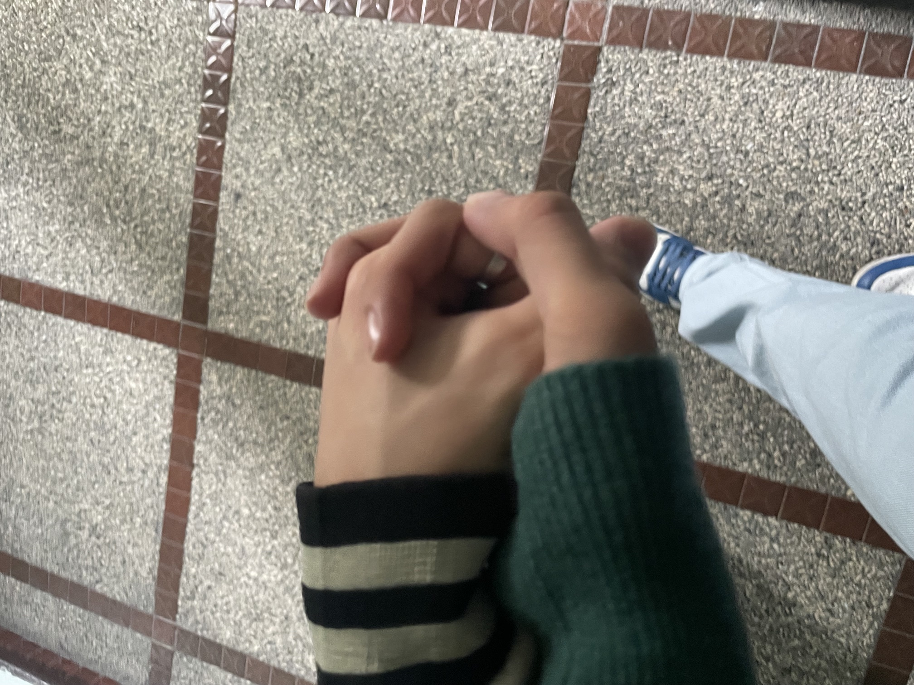
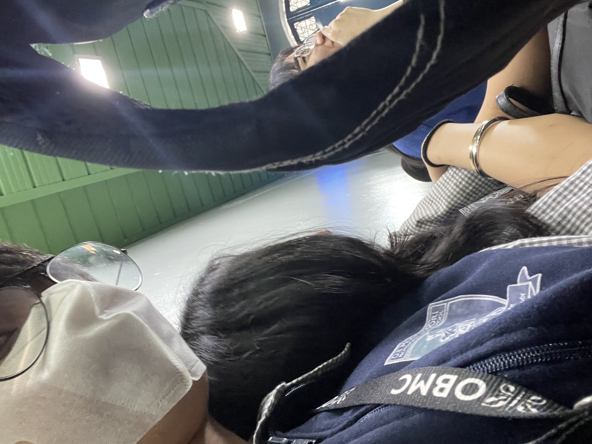
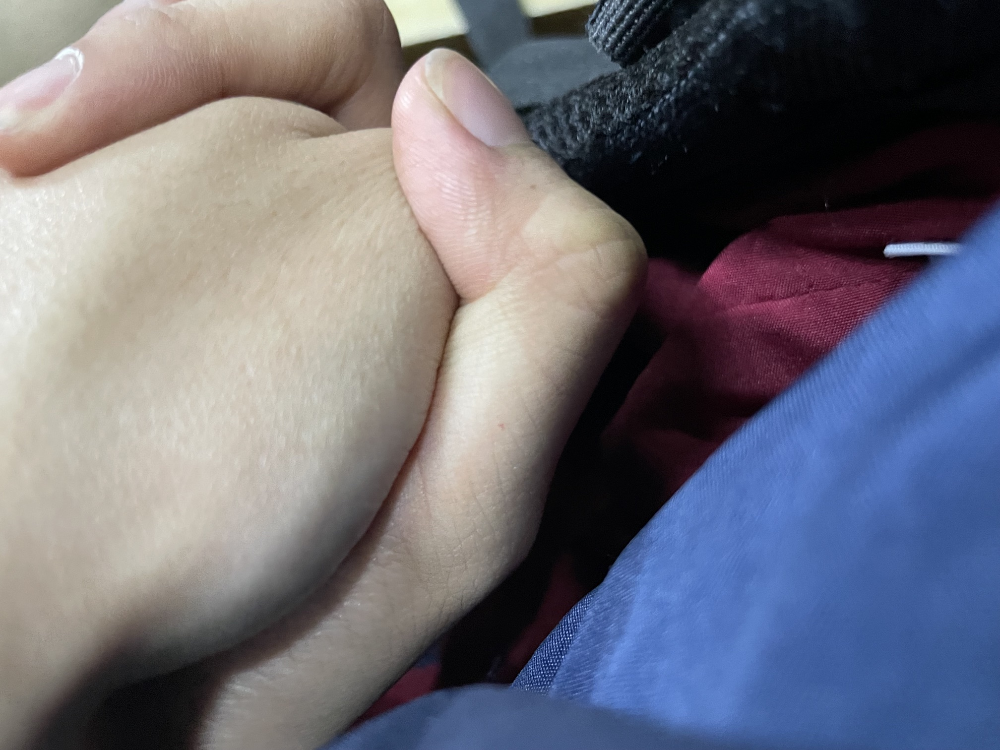
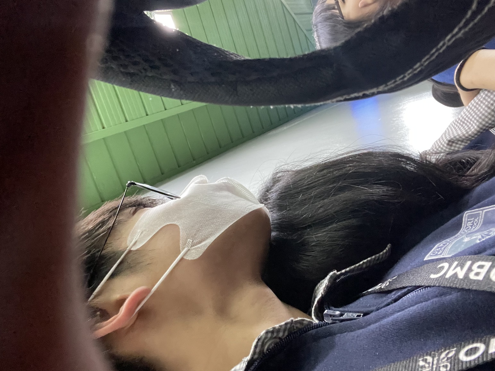

🎵 Popo says: I picked this song for you while you read ❤️
Thank you for taking the time to look through this website. Everything here was made with honesty, reflection, and appreciation for you.
I know I've hurt you and broken promises that mattered. I understand why those things still affect you today, and I understand why the memories of what happened are still on your mind.
I don't expect this website to magically fix everything, and I don't expect one apology to erase the pain I've caused. What I do hope is that it helps you understand what's in my heart and how serious I am about becoming a better person.
I recognize my mistakes, and I take responsibility for them. Looking back, there are many things I wish I had done differently. I know that some of my actions hurt you, disappointed you, and made it difficult for you to trust me. For that, I am truly sorry.
When we decided to start over, I saw it as an opportunity to learn from my mistakes instead of repeating them. I wanted to become a better person not only for our relationship, but also for myself. I wanted to grow from the things I've done wrong and prove that I can do better.
I know that saying I want to change isn't enough. Real change isn't shown through promises or words alone— it's shown through actions, consistency, and effort. That's why I'm trying every day to improve and become someone who is more honest, dependable, understanding, and worthy of the chance you've given me.
I understand that rebuilding trust takes time. I don't expect you to forget everything overnight, and I don't expect the hurt to disappear immediately. If I were in your position, I know it would be difficult too. But I hope that as time goes on, you'll be able to see the effort I'm putting into becoming better than I was before.
Thank you for staying, even when things have been difficult. I don't take that for granted. It means more to me than I can fully express, and it motivates me to keep working on myself every day.
I know that sometimes the past still comes back to your mind, and I understand why. What happened can't simply be erased. But I hope that when those thoughts come, you'll also remember that we chose to start over for a reason. We chose to give our relationship another chance because there was still something worth fighting for.
I don't want my past mistakes to define who I am forever, and I don't want them to define our relationship forever either. I can't change what happened, but I can learn from it. I can grow from it. Most importantly, I can show through my actions that I am serious about changing. I can't ask you to stop thinking about the past, but I do hope that one day the memories we create moving forward will become stronger than the memories that hurt us. Until then, I want to keep showing you through my actions that I am serious about changing and becoming a better partner for you.
My goal isn't just to say sorry. My goal is to become the kind of person who no longer makes the same mistakes, someone who makes you feel loved, respected, valued, and secure. I know I still have a lot to prove, but I am willing to put in that effort because you mean so much to me.
No matter how long it takes, I want my actions to show you what my words are trying to say: that I am grateful for this second chance, and that I am committed to becoming a better partner for you every single day.
There is something I want to share with you, not as an excuse for the mistakes I've made, but as part of the reason behind some of them.
I've struggled with Magical Thinking OCD, which can sometimes cause me to overthink situations, become trapped in fears, and believe that certain thoughts or actions have more meaning or consequences than they actually do.
Looking back, I realize that some of my decisions and behaviors were influenced by those struggles. However, I also understand that regardless of the reasons behind them, my actions still affected you and caused you pain.
I am not sharing this to avoid responsibility. I take full responsibility for the hurt I caused. I only want to be honest about what was happening in my mind so that you can better understand me.
I've been trying to learn more about myself, improve how I handle difficult thoughts, and become a healthier and more dependable person. I know growth takes time, but I am committed to continuing that journey.
I want to apologize if I made you feel like you were the only one putting in effort. Looking back, I realize that you were always the one making the first move, reaching out, and trying to keep things going. The truth is, it wasn't because I didn't appreciate you or wasn't interested. I was just really shy and still adjusting, and sometimes I didn't know how to express myself properly. I understand how that may have come across, and I'm sorry if it made you feel unimportant or like your efforts weren't being reciprocated. Thank you for being patient with me and for taking those first steps when I couldn't. I appreciate it more than I probably showed. I'm sorry for not making that clearer sooner.
More than anything, I want my actions moving forward to show the change I'm working toward.
I've learned that trust is built through consistency, honesty, communication, and actions. I've learned that promises mean very little if they aren't followed by effort. I've learned that the people we love deserve patience, understanding, and respect. Most importantly, I've learned that growth isn't something we talk about it's something we demonstrate every day.

One of my favorite memories is walking around with you. We didn't always have a destination or a plan, but every walk felt special because I was spending it with you.

I loved the times we would just sit together. Even when we weren't doing anything exciting, your presence made those moments feel peaceful and comforting.

Whether we were talking about our day, sharing stories, laughing, or discussing random things, every conversation with you became a memory I cherish.

The memories I treasure most aren't the grand ones. They're the simple moments of walking beside you, sitting next to you, and spending time together. Those moments always made me happy.